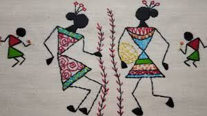
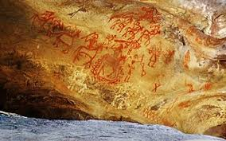
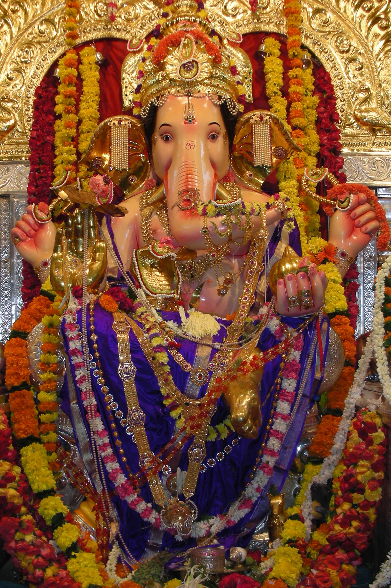
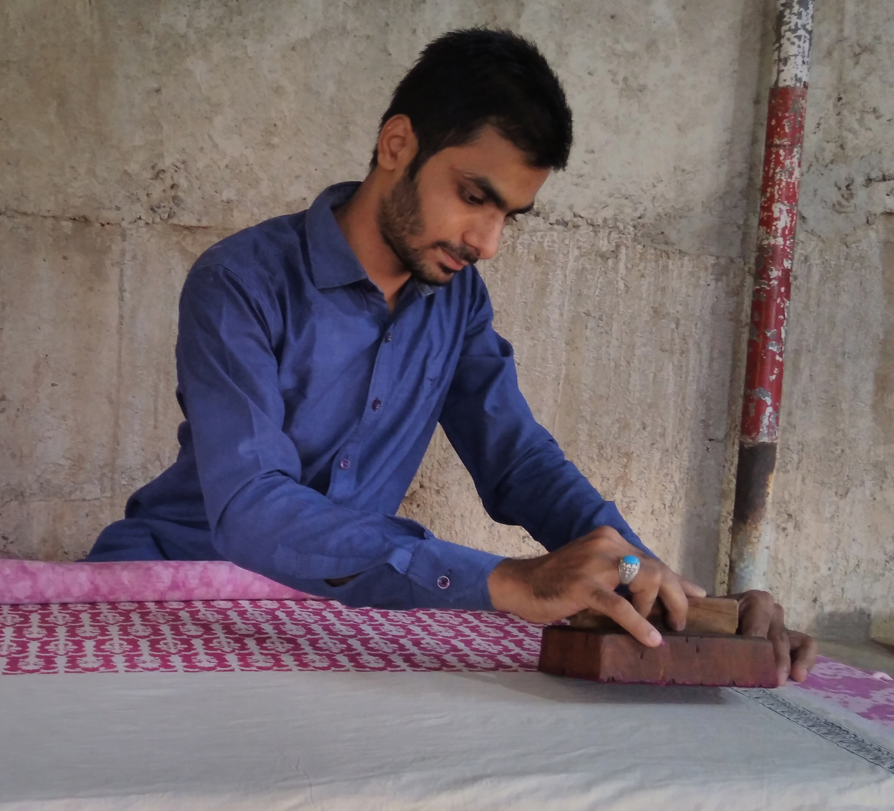

| HOME | NATIONAL PARKS IN MAHARASHTRA | FORTS IN MHARASHTRA | ANIMALS IN MHARASHTRA | FOOD IN MHARASHTRA | MUSIC IN MHARASHTRA | ART IN MAHARASHTRA | BIRDS IN MAHARASHTRA | LITERATURE IN MAHARASHTRA |
|  |
TRIBAL ARTWarli painting is a style of tribal art mostly created by the tribal people from the North Sahyadri Range in India. This range encompasses cities such as Dahanu, Talasari, Jawhar, Palghar, Mokhada, and Vikramgad of Palghar district. This tribal art was originated in Maharashtra, where it is still practiced today. |
|  |
CAVE PAINTINGAlmost all early painting in India survives in caves, as no buildings from ancient India survive, and though these were probably often painted, the work has been lost.[citation needed] The history of cave paintings in India or rock art range from drawings and paintings from prehistoric times, beginning in the caves of Central India, typified by those at the Bhimbetka rock shelters from around 10,000 BP, to elaborate frescoes at sites such as the rock-cut artificial caves at Ajanta and Ellora, extending as late as the 10th – 12th century BP. |
|  |
CULTURE ARTMaharashtra is the third largest state of India.It has a long history of Marathi saints of Varakari religious movement, such as Dnyaneshwar, Namdev, Chokhamela, Eknath and Tukaram which forms the one of bases of the culture of Maharashtra or Marathi culture. Maharashtra had huge influence over India in 17th-century King Chatrapati Shivaji Maharaj of Maratha Empire and his concept of Hindavi Swarajya which translates to self-rule of people |
|  |
CRAFTBidriware The term 'Bidriware' originates from the township of Bidar, which is still the chief centre for the manufacture of the unique metalware. Due to its striking inlay artwork, Bidriware is an important export handicraft of India and is prized as a symbol of wealth. The metal used is a blackened alloy of zinc and copper inlaid with thin sheets of pure silver. |